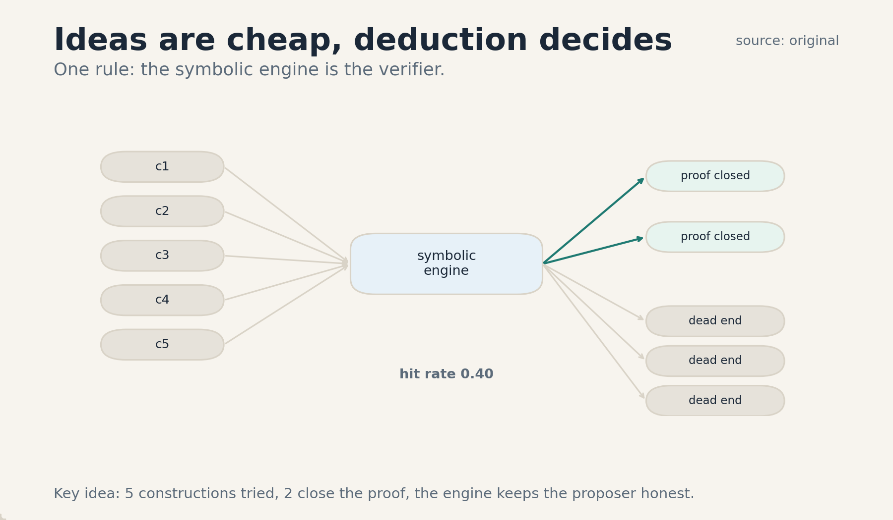
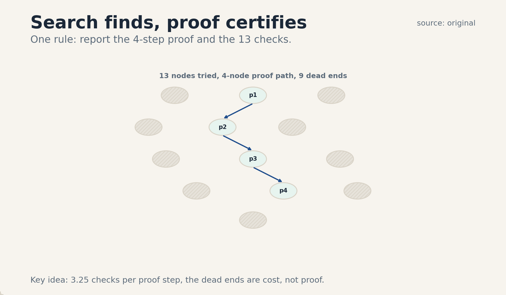
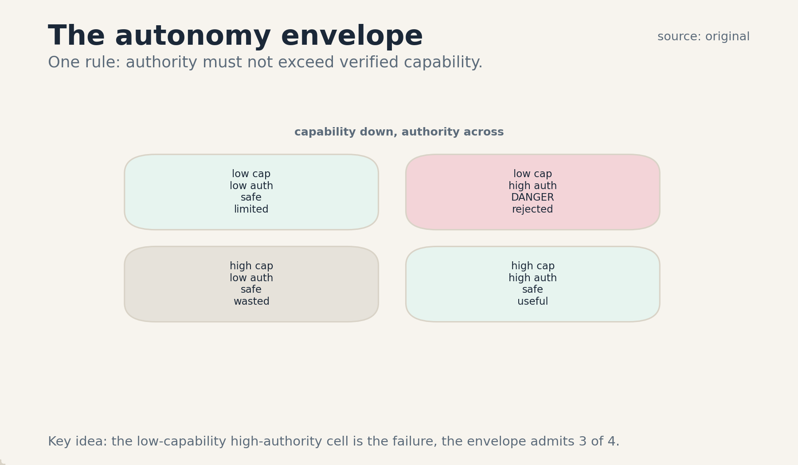

U07 · Reasoning, formal systems, and autonomy
U07 , Reasoning, formal systems, and autonomy
Course: Stanford CS329A, Autumn 2025. Official sessions 15 (Nov 10, guest: Denny Zhou, Google DeepMind, LLM Reasoning), 16 (Nov 14, guest: Thang Luong, Google DeepMind, AlphaProof, AlphaGeometry, IMO Gold), 18 (Nov 21, guest: Misha Laskin, Reflection AI, Building Agentic Systems for Autonomy), 19 (Dec 1, guest: Danny Driess, Physical Intelligence, Multimodal AI Agents in Robotics). All guest content at schedule-line level only. Baseline: 2026-10-07.
Claim class: mechanisms are taught from the requested inventory with SOURCE
ATTRIBUTION PENDING. Paper and system names come from the verified
official schedule (see ../source_manifest.md). No paper contents were
individually inspected by this builder. Guest sessions are taught at
schedule-line level only, per the honesty note. Toy numbers are computed
and traceable. No benchmark numbers are claimed.
Unit objectives
After this unit the learner can: state what the guest sessions do and do not cover, describe AlphaProof-style formal proof search, describe the AlphaGeometry neuro-symbolic loop, separate conjecture from search from proof, use a symbolic environment as a verifier, draw the autonomy envelope, trace a robot perception-action loop, fuse multimodal feedback, scope sim-to-real transfer, write safety rules, test trace faithfulness, and inventory guest gaps honestly.
Dependencies
P17 (RL), P20 (tools, agent state), P22 (experimental method). Local
remediation is inside C05. The shared bridges live at
../shared/prerequisites/.
Four-way link used in this unit
Intuition: a proof is a checkable artifact, search is the process that finds it, and the symbolic kernel is the judge that cannot be argued with. Equation: proof success = P(conjecture good) times P(search finds it). Code: a loop of propose-tactic, check-with- kernel. Observation: the kernel’s yes is certain, everything else is a guess that needs the kernel.
C01 guest reasoning evidence
1. Source mapping, scope, objectives, dependencies. Session 15 (Nov 10), guest: Denny Zhou (Google DeepMind), LLM Reasoning. Schedule line only. Scope: what is honestly known from the schedule. Objective: state the evidence boundary for all four guest sessions. Dependencies: none.
2. Motivating question and tiny toy. Question: what did the guest actually say? Toy answer: the schedule line says “LLM Reasoning”. That is the whole evidence. Everything else is inference, and inference is not evidence.
3. Plain-language mental model. A schedule line is a title, not a transcript. It tells you the topic and the speaker. It does not tell you the claims, the demos, or the numbers. This concept teaches the discipline of the boundary: say what the line supports, and stop there.
4. Variables, units, shapes, assumptions. Evidence set: the four schedule lines (sessions 15, 16, 18, 19). Claim: any statement about what was said. Rule: a claim needs a source stronger than the line. Assumptions: the schedule is accurate, the talks happened as listed.
5. Justified derivation or mechanism. The mechanism is provenance hygiene. Each rung of evidence (schedule line, slides, transcript, recording) supports stronger claims. Teaching at the schedule line means: name the speaker, name the topic, name the gap. The gap is the point: it tells the learner exactly what to go read.
6. Computed numerical example using the same objects. Toy: 4 guest sessions. Evidence level for each: schedule line. Claims supported: 4 (who spoke, on what topic, on what date). Claims not supported: everything about content. Boundary score: 4/4 sessions correctly labeled at line level.
7. Algorithm and original minimal implementation.
GUESTS = {
15: ("Denny Zhou", "LLM Reasoning"),
16: ("Thang Luong", "AlphaProof, AlphaGeometry, IMO Gold"),
18: ("Misha Laskin", "Building Agentic Systems for Autonomy"),
19: ("Danny Driess", "Multimodal AI Agents in Robotics"),
}
def evidence_level(session):
return "schedule-line only"
8. Correctness checks and expected output. Check: no content claim appears for any guest. Check: all four sessions are listed. Check: the boundary score is 4/4.
9. Complexity, memory, statistical efficiency, stability, practical costs. Cost: zero, the lines are on the schedule. The cost comes later, when the learner reads the actual papers.
10. Nearest alternatives and precise selection boundaries. Invented content: pick never. Silence about guests: worse, it hides the gap. Schedule-line teaching: pick whenever the source is a line.
11. Failure case, broken assumption, counterexample. Break the boundary: the lesson “explains” what Denny Zhou said about reasoning. That is fabrication with a famous name on it. Counterexample: a session with released slides: the evidence rung rises, and so may the claims.
12. Research reading and falsifiable extension. Reading: the official schedule page (VERIFIED). Extension: the learner reads the AlphaProof and AlphaGeometry papers and raises C02-C05 from attribution-pending to inspected.
13. Breadth recall, deep oral ladder, unfamiliar transfer. Recall: list the four guest sessions. Ladder: define the boundary, run the toy, justify the rung rule, code the table, state the zero cost, compare with invented content, debug the fabrication failure, critique the line’s thinness, design the paper-reading follow-up. Transfer: the same boundary rule covers press-release science.
14. Lab/exercises with answers separated.
E1.1: list the four sessions with dates. E1.2: explain the
boundary in two sentences. E1.3: name the fabrication failure.
Answers: ../keys/u07_answers.md.
15. Visual units, provenance, accessibility, audit rows.
Table plate in the lesson (item 7: the guest table). No
separate PNG. Logged in ../visual_audit.md.
C02 AlphaProof/formal verification
1. Source mapping, scope, objectives, dependencies. Session 16 (Nov 14), guest: Thang Luong (Google DeepMind), AlphaProof, AlphaGeometry, IMO Gold. Schedule line only. The mechanism below is taught from the requested inventory with SOURCE ATTRIBUTION PENDING. Scope: formal proof search with a proof assistant. Objective: run a toy tactic search. Dependencies: P17.
2. Motivating question and tiny toy.
Question: how can a machine prove a math theorem so that no
human needs to check the steps? Toy: goal 2 + 2 = 4 in Lean.
Tactic rfl closes it. The kernel checks the proof, not a
human.
3. Plain-language mental model. A proof assistant is a ruthless referee. You state the theorem, then apply tactics (small proof steps). After each tactic the referee says what remains to prove. When nothing remains, the kernel certifies the proof. AlphaProof-style systems learn to propose tactics and search over them: the neural net conjectures steps, the kernel judges them.
4. Variables, units, shapes, assumptions. Goal state: the propositions left to prove. Tactic: an action that transforms the goal state. Proof: a tactic sequence the kernel accepts. Search: over tactic sequences, guided by a learned policy. Assumptions: the kernel is sound, tactics are the action space, the theorem statement is formalized.
5. Justified derivation or mechanism. The mechanism is search with a perfect verifier. The kernel accepts or rejects each tactic application deterministically, so every node in the search tree is labeled right or wrong for free. The neural policy proposes promising tactics (the conjecture side), and search (best-first or MCTS-style) allocates effort among them. The loop works because the verifier is free, fast, and infallible: the two hard problems of search (scoring nodes, knowing when to stop) are solved by construction.
6. Computed numerical example using the same objects. Toy: 6 tactic sequences tried, 2 close the goal. Success rate: 2/6 = 1/3. Branching: 3 tactics tried at the root, 2 at depth 2. Nodes visited: 1 + 3 + 2 = 6. The kernel judged all 6 for free. The proof is the 2-step winning sequence. The other 4 sequences are search cost, not proof.
7. Algorithm and original minimal implementation.
def proof_search(goal, policy, kernel, budget=6):
visited = 0
for tactics in policy.propose(goal, budget):
visited += 1
if kernel.check(goal, tactics):
return tactics, visited # proof found
return None, visited
8. Correctness checks and expected output. Check: only kernel-accepted sequences return. Check: the toy visits 6 nodes and finds 2 proofs. Check: rejected tactics cost search, not correctness.
9. Complexity, memory, statistical efficiency, stability, practical costs. Search cost: O(nodes) kernel checks, each cheap. The policy training is the expensive part (needs formalized theorems). Stability: the kernel never disagrees with itself.
10. Nearest alternatives and precise selection boundaries. Informal proof (natural language): pick when humans read it. Automated tactics only: pick for routine goals. Neural-guided search: pick for hard goals with a formal statement.
11. Failure case, broken assumption, counterexample. Break formalization: the theorem is stated wrong in Lean. The system proves the wrong statement perfectly. Counterexample: a goal with no tactic sequence in the action space: search runs the full budget and finds nothing.
12. Research reading and falsifiable extension. Reading: AlphaProof (SOURCE ATTRIBUTION PENDING). Extension: hypothesis: neural tactic proposals beat uniform search at fixed node budget. Falsification: equal proof rates.
13. Breadth recall, deep oral ladder, unfamiliar transfer. Recall: define goal, tactic, kernel. Ladder: define the referee, run the toy, justify free verification, code the search, state the node cost, compare with informal proof, debug the wrong-statement failure, critique the action space, design the proposal experiment. Transfer: the same loop proves program properties.
14. Lab/exercises with answers separated.
E2.1: compute the toy success rate and nodes visited. E2.2:
explain the free verifier in two sentences. E2.3: name the
wrong-statement failure. Answers: ../keys/u07_answers.md.
15. Visual units, provenance, accessibility, audit rows.
Table plate in the lesson (item 6: sequences, verdicts). No
separate PNG. Logged in ../visual_audit.md.
C03 AlphaGeometry
1. Source mapping, scope, objectives, dependencies. Session 16, guest: Thang Luong, AlphaGeometry. Schedule line only. Mechanism taught from the requested inventory with SOURCE ATTRIBUTION PENDING. Scope: the neuro-symbolic geometry loop. Objective: trace the propose-and-close loop on a toy. Dependencies: C02.
2. Motivating question and tiny toy. Question: a geometry proof needs a clever extra line drawn in the diagram. Where does the cleverness come from? Toy: the neural net proposes 5 auxiliary constructions. The symbolic engine tries each: 2 close the proof, 3 are dead ends.
3. Plain-language mental model. Split the job by talent. The neural net is the idea generator: it looks at the diagram and suggests constructions (“draw the midpoint”, “drop a perpendicular”). The symbolic engine is the finisher: it runs deductive rules to saturation and checks whether the goal follows. Ideas are cheap and often wrong, deduction is certain. The loop tries ideas until deduction closes the proof.
4. Variables, units, shapes, assumptions. Construction: an added geometric object. Deduction closure: all facts derivable by the rule set. Proof: closure containing the goal. Assumptions: the rule set is complete enough, the proposer covers useful constructions, the engine is sound.
5. Justified derivation or mechanism. The mechanism is guess-and-verify factored by strength. Search over constructions is the hard part (infinite space of things to draw). Deduction given a construction is mechanical. The neural net amortizes the search: it learned which constructions tend to help from solved problems. The engine keeps it honest: a bad construction simply fails to close, costing only engine time.
6. Computed numerical example using the same objects. Toy: 5 constructions proposed. Engine results: c1 closes in 12 deduction steps, c2 closes in 20 steps, c3/c4/c5 fail. Close rate: 2/5 = 0.40. Engine cost: 5 closures attempted. The proof is (c1, 12 steps). The proposer’s hit rate is 0.40.
7. Algorithm and original minimal implementation.
def alphageometry_loop(problem, proposer, engine):
for c in proposer.suggest(problem, k=5):
closure = engine.close(problem + c)
if problem.goal in closure:
return c, closure # proof found
return None
8. Correctness checks and expected output. Check: only engine-closed constructions return. Check: the toy close rate is 0.40. Check: failed constructions cost engine time only.
9. Complexity, memory, statistical efficiency, stability, practical costs. Cost: k engine closures per problem. The proposer training needs solved problems. Stability: the engine is deterministic.
10. Nearest alternatives and precise selection boundaries. Pure symbolic search: pick when the construction space is small. Pure neural proof: pick never for certification, the steps are uncheckable. Neuro-symbolic loop: pick when ideas are the bottleneck and checking is cheap.
11. Failure case, broken assumption, counterexample. Break the rule set: the needed deduction rule is absent. No construction closes the proof, and the proposer is blamed for an engine gap. Counterexample: a problem solvable with no construction: the proposer is pure overhead.
12. Research reading and falsifiable extension. Reading: AlphaGeometry (SOURCE ATTRIBUTION PENDING). Extension: hypothesis: proposer hit rate predicts solve rate across problem difficulties. Falsification: no correlation.
13. Breadth recall, deep oral ladder, unfamiliar transfer. Recall: define construction and closure. Ladder: define the split, run the toy, justify the factorization, code the loop, state the closure cost, compare with pure search, debug the missing-rule failure, critique the proposer, design the hit-rate experiment. Transfer: the same loop synthesizes programs (guess code, verify with tests).
14. Lab/exercises with answers separated.
E3.1: compute the toy close rate. E3.2: explain the talent
split in two sentences. E3.3: name the missing-rule failure.
Answers: ../keys/u07_answers.md.
15. Visual units, provenance, accessibility, audit rows.
PNG ../visuals/u07_fig01.png: 5 construction chips into the
engine, 2 close, 3 dead-end, one rule: the engine is the
verifier. Source: original. Alt text: five chips left, engine
box center, two green proofs and three gray dead ends right.
Logged in ../visual_audit.md.

C04 conjecture/search/proof distinctions
1. Source mapping, scope, objectives, dependencies. Session 16. Scope: the three objects, kept separate. Objective: classify each piece of a toy run. Dependencies: C02, C03.
2. Motivating question and tiny toy. Question: the system explored 13 nodes and output a proof. What was the proof? Toy: the 4-node winning path. The other 9 nodes were search, not proof.
3. Plain-language mental model. A conjecture is a guess: “this tactic might work”, “this construction might help”. Search is the process of trying guesses. A proof is the artifact that remains: the sequence the verifier accepted. Confusing search with proof is the cardinal sin: the 9 dead ends are not part of the proof, they are the cost of finding it.
4. Variables, units, shapes, assumptions. Conjecture: a proposed step. Search tree: all tried steps. Proof: the accepted path. Proof size << search size, usually. Assumptions: the verifier is sound, the path is replayable.
5. Justified derivation or mechanism. The mechanism is the distinction itself. It matters for three reasons. One: only the proof needs to be stored and checked. Two: search cost is the efficiency metric, proof size is the elegance metric, and they are different numbers. Three: a system that reports search as proof misreports what it knows. The derivation is definitional, and definitions are load-bearing here.
6. Computed numerical example using the same objects. Toy: 13 nodes explored, proof path 4 nodes, dead ends 9. Search cost: 13 kernel checks. Proof size: 4 steps. Ratio: 13/4 = 3.25 checks per proof step. The report says “proof of 4 steps found after 13 checks”, not “13-step proof”.
7. Algorithm and original minimal implementation.
def classify(run):
proof = run.accepted_path
search = run.tried_nodes
return {"proof": proof, "search_cost": len(search),
"dead_ends": len(search) - len(proof)}
8. Correctness checks and expected output. Check: proof is a subset of tried nodes. Check: the toy gives 4 proof steps, 9 dead ends. Check: the report names both numbers.
9. Complexity, memory, statistical efficiency, stability, practical costs. Storing the proof is cheap. Storing the search is optional and useful for training the proposer. Cost: the distinction itself is free.
10. Nearest alternatives and precise selection boundaries. Report search as proof: pick never. Report proof only: pick for certification. Report both: pick for research.
11. Failure case, broken assumption, counterexample. Break replayability: the proof path depends on randomness and does not replay. A lucky trace is not a proof. Counterexample: a proof found with zero search (first try): search cost 1, proof size 4, the distinction still holds.
12. Research reading and falsifiable extension. Reading: proof search literature (SOURCE ATTRIBUTION PENDING). Extension: hypothesis: dead-end patterns train better proposers than successes alone. Falsification: no gain.
13. Breadth recall, deep oral ladder, unfamiliar transfer. Recall: define the three objects. Ladder: define each, run the toy, justify the separation, code the classifier, state the storage cost, compare reporting styles, debug the lucky-trace failure, critique the ratio, design the dead-end experiment. Transfer: the same split covers scientific discovery (hypothesis, experiment, result).
14. Lab/exercises with answers separated.
E4.1: compute the toy ratio. E4.2: explain the cardinal sin in
two sentences. E4.3: name the lucky-trace failure. Answers:
../keys/u07_answers.md.
15. Visual units, provenance, accessibility, audit rows.
PNG ../visuals/u07_fig02.png: the 13-node tree with the
4-node proof path highlighted and 9 dead ends hatched, one
rule: search is the process, proof is the artifact. Source:
original. Alt text: tree with a highlighted path of 4 nodes,
9 hatched dead ends. Logged in ../visual_audit.md.

C05 symbolic environment
1. Source mapping, scope, objectives, dependencies. Session 16. Scope: the proof assistant as the agent’s world. Objective: write the environment interface for a toy prover. Dependencies: C02. Local remediation: the tactic as an action is defined in item 4.
2. Motivating question and tiny toy. Question: what does the agent actually see and do inside Lean? Toy: state = the open goals. Actions = 12 tactics. Reward = 1 when the kernel accepts the full proof, 0 otherwise. The environment is discrete, deterministic, and fully observed.
3. Plain-language mental model. The symbolic environment is a board game with perfect rules. The board shows the goals. A move is a tactic. The referee (the kernel) never makes a mistake and never gets tired. The agent learns the game by playing it: propose tactics, watch the board change, get paid only for checkmate.
4. Variables, units, shapes, assumptions. State s: goal stack (list of propositions). Action a: tactic from a fixed set. Transition: deterministic, given by the tactic semantics. Reward: sparse, 1 at proof close. Assumptions: the tactic set is fixed, the kernel is sound, the goal stack fits in the state encoding.
5. Justified derivation or mechanism. The mechanism is RL in a perfect simulator. The sparse reward is survivable here because the verifier labels every step: a tactic that closes a subgoal is progress even before the full proof. Credit assignment uses the goal stack: each tactic’s effect is visible in the next state. This is why formal domains train well: the environment is the teacher.
6. Computed numerical example using the same objects. Toy: 12 tactics, goal needs 4 specific ones in order. Random play: success probability (1/12)^4 = 1/20736, about 0.00005. Guided play (policy picks among 3 plausible per state): (1/3)^4 = 1/81, about 0.012. The policy buys a 250x improvement before search even starts.
7. Algorithm and original minimal implementation.
ENV = {"state": "goal_stack", "actions": 12,
"reward": "1 if kernel accepts else 0"}
def step(state, tactic, kernel):
new_state = kernel.apply(state, tactic)
done = kernel.closed(new_state)
return new_state, (1 if done else 0), done
8. Correctness checks and expected output. Check: illegal tactics are rejected by the kernel. Check: the toy random-play rate is about 0.00005. Check: reward is 0 until the proof closes.
9. Complexity, memory, statistical efficiency, stability, practical costs. Step cost: one kernel application, cheap. The expensive part trains the policy. Stability: deterministic transitions, no noise.
10. Nearest alternatives and precise selection boundaries. Learned reward model: pick when no kernel exists. Human judgment: pick for informal math. Symbolic environment: pick when the domain has a sound checker.
11. Failure case, broken assumption, counterexample. Break the tactic set: the needed tactic is absent. The agent plays perfectly and never wins. Counterexample: a domain with no verifier (essay writing): the environment cannot score, and the loop has no teacher.
12. Research reading and falsifiable extension. Reading: RL in formal domains (SOURCE ATTRIBUTION PENDING). Extension: hypothesis: dense subgoal rewards beat sparse proof rewards at fixed budget. Falsification: equal proof rates.
13. Breadth recall, deep oral ladder, unfamiliar transfer. Recall: define state, action, reward. Ladder: define the game, run the toy, justify the teacher claim, code the step, state the step cost, compare with learned rewards, debug the missing-tactic failure, critique sparsity, design the reward experiment. Transfer: the same setup trains game agents.
14. Lab/exercises with answers separated.
E5.1: compute the random-play and guided-play rates. E5.2:
explain the teacher claim in two sentences. E5.3: name the
missing-tactic failure. Answers: ../keys/u07_answers.md.
15. Visual units, provenance, accessibility, audit rows.
Table plate in the lesson (item 7: the ENV spec). No separate
PNG. Logged in ../visual_audit.md.
C06 autonomy limits
1. Source mapping, scope, objectives, dependencies. Session 18 (Nov 21), guest: Misha Laskin (Reflection AI), Building Agentic Systems for Autonomy. Schedule line only. Scope: the envelope that bounds what an agent may do alone. Objective: draw the capability-authority matrix on a toy. Dependencies: P20.
2. Motivating question and tiny toy. Question: the agent can do many things. Which may it do without asking? Toy matrix: capability low/high crossed with authority low/high. The dangerous cell: low capability, high authority. The wasted cell: high capability, low authority.
3. Plain-language mental model. Autonomy is two dials, not one. Capability is what the agent can do well. Authority is what it is allowed to do alone. The rule: authority must not exceed verified capability. The diagonal is the safe zone. The off-diagonal cells are the two failure modes (danger, waste).
4. Variables, units, shapes, assumptions. Capability c: measured task success. Authority a: the action set without human approval. Envelope: a <= c, with margin. Assumptions: capability is measured on representative tasks, authority is enforced (C10 of U05), the margin covers drift.
5. Justified derivation or mechanism. The mechanism is the envelope check. Every new authority (a new tool, a bigger budget, no-approval merges) needs a capability measurement first. The derivation is risk math: expected harm = P(failure) times harm per failure, and P(failure) = 1 - c. Raising authority without raising c raises expected harm linearly. The margin handles the fact that c is measured on the past and the future differs.
6. Computed numerical example using the same objects. Toy: 4 agent configs. (c=0.95, a=low): safe, wasted. (c=0.95, a=high): safe, useful. (c=0.60, a=high): dangerous, expected failure 0.40 per unsupervised action. (c=0.60, a=low): safe, limited. The envelope admits 3 of 4. The dangerous cell is rejected until c rises or a falls.
7. Algorithm and original minimal implementation.
def envelope_ok(capability, authority, margin=0.05):
allowed = {"low": 0.70, "high": 0.95}
return capability >= allowed[authority] + margin
8. Correctness checks and expected output. Check: (0.60, high) fails. Check: (0.95, high) passes with margin. Check: the toy admits 3 of 4.
9. Complexity, memory, statistical efficiency, stability, practical costs. The check is O(1). The cost is honest measurement of c. Stability: c drifts, re-measure on a schedule.
10. Nearest alternatives and precise selection boundaries. Full autonomy: pick never without measured c. Human-in-loop everything: pick when c is unknown. Envelope: pick whenever authority grows.
11. Failure case, broken assumption, counterexample. Break measurement: c was measured on easy tasks. The agent gets high authority and meets hard tasks. Counterexample: an agent with c = 0.99 on a task where failure costs nothing: the envelope is overkill, and the margin can shrink.
12. Research reading and falsifiable extension. Reading: autonomy engineering (schedule line only, SOURCE ATTRIBUTION PENDING). Extension: hypothesis: envelope-gated rollouts have fewer incidents than ungated ones. Falsification: equal incident rates.
13. Breadth recall, deep oral ladder, unfamiliar transfer. Recall: define capability and authority. Ladder: define the dials, run the toy, justify the envelope, code the check, state the measurement cost, compare with full autonomy, debug the easy-task failure, critique the margin, design the rollout experiment. Transfer: the same envelope gates a junior employee’s sign-off rights.
14. Lab/exercises with answers separated.
E6.1: evaluate the 4 toy configs. E6.2: explain the two dials
in two sentences. E6.3: name the easy-task failure. Answers:
../keys/u07_answers.md.
15. Visual units, provenance, accessibility, audit rows.
PNG ../visuals/u07_fig03.png: the 2x2 matrix with the
dangerous cell marked, one rule: authority must not exceed
verified capability. Source: original. Alt text: four cells,
low/high capability by low/high authority, one cell marked
danger. Logged in ../visual_audit.md.

C07 robot perception/action
1. Source mapping, scope, objectives, dependencies. Session 19 (Dec 1), guest: Danny Driess (Physical Intelligence), Multimodal AI Agents in Robotics. Schedule line only. Scope: the perception-action loop for embodied agents. Objective: trace one grasp loop on a toy. Dependencies: P20.
2. Motivating question and tiny toy. Question: the robot must pick up a cup. What does one attempt look like? Toy: observe (camera: cup at x=3), plan (grasp at x=3), act (close gripper), observe (cup slipped). Three attempts, success on the third.
3. Plain-language mental model. The robot lives in the same loop as the code agent, but the tools are a camera and a gripper, and the “tests” are physics. Perception turns the world into state. Action changes the world. The loop repeats until the state matches the goal or the budget runs out. The world is the verifier, and it does not negotiate.
4. Variables, units, shapes, assumptions. State: pose estimates from sensors. Action: motor commands. Goal: a predicate on state (cup in gripper). Attempts capped at n. Assumptions: sensors are calibrated, actions are reversible enough to retry, the goal is checkable.
5. Justified derivation or mechanism. The mechanism is closed-loop control with learned perception. Open-loop (plan once, execute blind) fails because the world model is wrong in detail: the cup is 2 cm left of the plan. Each observation corrects the state, each action is re-planned from the corrected state. The loop converges when perception error is smaller than the action tolerance.
6. Computed numerical example using the same objects. Toy: 3 grasp attempts. Attempt 1: perceived x=3, true x=5, miss. Attempt 2: perceived x=5, true x=5, slip at lift. Attempt 3: slower lift, success. Success rate: 1/3 attempts, 1/1 tasks (the task allows 3 tries). Perception error fell from 2 to 0 across attempts as the camera got closer.
7. Algorithm and original minimal implementation.
def grasp_loop(robot, goal, max_tries=3):
for t in range(max_tries):
state = robot.perceive()
action = robot.plan(state, goal)
robot.act(action)
if goal.check(robot.perceive()):
return True, t + 1
return False, max_tries
8. Correctness checks and expected output. Check: the loop stops at success. Check: the toy returns (True, 3). Check: perception runs before every plan.
9. Complexity, memory, statistical efficiency, stability, practical costs. Cost per attempt: one perceive-plan-act cycle. The camera and compute dominate. Stability: sensor noise needs filtering, or the plan chases noise.
10. Nearest alternatives and precise selection boundaries. Open-loop execution: pick never for contact tasks. Scripted policy: pick when the world is fixed. Closed loop: pick when the world varies.
11. Failure case, broken assumption, counterexample. Break calibration: the camera is 5 cm off and nobody recalibrated. Every plan is 5 cm wrong, and retries never converge. Counterexample: a task with no sensing (timed pour): the loop has no observation, it is open-loop by necessity.
12. Research reading and falsifiable extension. Reading: multimodal robotics (schedule line only, SOURCE ATTRIBUTION PENDING). Extension: hypothesis: closed-loop beats open-loop on varied objects at fixed tries. Falsification: equal success.
13. Breadth recall, deep oral ladder, unfamiliar transfer. Recall: define the loop’s four steps. Ladder: define the loop, run the toy, justify re-perception, code the loop, state the cycle cost, compare with open-loop, debug the calibration failure, critique the goal predicate, design the loop experiment. Transfer: the same loop drives a drone landing.
14. Lab/exercises with answers separated.
E7.1: compute the toy attempt success rate. E7.2: explain why
the world is the verifier in two sentences. E7.3: name the
calibration failure. Answers: ../keys/u07_answers.md.
15. Visual units, provenance, accessibility, audit rows.
Table plate in the lesson (item 6: attempt, perception,
result). No separate PNG. Logged in ../visual_audit.md.
C08 multimodal feedback
1. Source mapping, scope, objectives, dependencies. Session 19. Scope: fusing several sensor channels as feedback. Objective: show one catch that vision missed on a toy. Dependencies: C07.
2. Motivating question and tiny toy. Question: the camera says the grasp is good. Is it? Toy: three channels. Vision: cup in gripper, looks fine. Force: slip detected, grip too loose. Proprioception: wrist at its limit. The force channel catches what vision misses. The agent tightens and retries.
3. Plain-language mental model. One sensor lies by omission. Vision sees shape but not force, force feels slip but not position, proprioception knows the joints but not the world. Fusion is a vote among experts: each channel reports what it knows, and the agent acts on the union. The channels must be independent enough that their failures do not coincide.
4. Variables, units, shapes, assumptions. Channels: vision v, force f, proprioception p. Each gives a verdict (ok/fail) plus confidence. Fusion rule: fail if any high-confidence channel says fail. Assumptions: channels are calibrated, failures are not perfectly correlated.
5. Justified derivation or mechanism. The mechanism is independent-error fusion. If each channel misses a fault with probability e_i independently, the fused miss rate is the product e_1 * e_2 * e_3, much smaller than any one. The independence is the load-bearing assumption: two cameras with the same blind spot do not fuse, they echo.
6. Computed numerical example using the same objects. Toy: miss rates: vision 0.20, force 0.10, proprioception 0.30. Independent fused miss: 0.20 * 0.10 * 0.30 = 0.006. The toy grasp: vision misses the slip (its 0.20 event), force catches it. One catch in 3 channels is enough under the any-fail rule.
7. Algorithm and original minimal implementation.
def fused_verdict(channels):
for name, verdict, conf in channels:
if verdict == "fail" and conf > 0.7:
return "fail", name
return "ok", None
8. Correctness checks and expected output. Check: one high-confidence fail vetoes. Check: the toy fused miss is 0.006. Check: the slip is caught by force.
9. Complexity, memory, statistical efficiency, stability, practical costs. Cost: running all sensors plus fusion. Calibration drift in one channel poisons the vote. Stability: re-calibrate on a schedule.
10. Nearest alternatives and precise selection boundaries. Vision only: pick when force sensing is unavailable and the task is gentle. Single best channel: pick when channels are correlated. Fusion: pick when failures are independent and the cost of a miss is high.
11. Failure case, broken assumption, counterexample. Break independence: vision and the depth camera share one lens. Both miss the transparent cup together, and fusion adds nothing. Counterexample: a task where force is the only signal that matters (weighing): vision is pure noise, drop it.
12. Research reading and falsifiable extension. Reading: sensor fusion (schedule line only, SOURCE ATTRIBUTION PENDING). Extension: hypothesis: fused verdicts cut grasp failures versus vision-only. Falsification: equal failures.
13. Breadth recall, deep oral ladder, unfamiliar transfer. Recall: name the three channels and the fusion rule. Ladder: define the vote, run the toy, justify the product, code the fusion, state the sensor cost, compare with vision-only, debug the shared-lens failure, critique independence, design the fusion experiment. Transfer: the same vote fuses fraud signals.
14. Lab/exercises with answers separated.
E8.1: compute the fused miss rate for the toy. E8.2: explain
the independence assumption in two sentences. E8.3: name the
shared-lens failure. Answers: ../keys/u07_answers.md.
15. Visual units, provenance, accessibility, audit rows.
Table plate in the lesson (item 6: channel, verdict). No
separate PNG. Logged in ../visual_audit.md.
C09 sim-to-real scope
1. Source mapping, scope, objectives, dependencies. Session 19. Scope: what transfers from simulator to reality. Objective: compute the reality gap on a toy. Dependencies: C07.
2. Motivating question and tiny toy. Question: the policy grasps 95 percent in simulation. What happens on the real robot? Toy: real success 0.70. Gap: 0.25. With domain randomization the real success rises to 0.76 and the gap narrows to 0.12.
3. Plain-language mental model. The simulator is a dream of the world: same shapes, wrong details. Friction, lighting, wear, and sensor noise differ. The policy learns the dream’s habits, then meets reality. The gap is the difference in success. Randomizing the dream (friction, mass, lighting) teaches habits that survive the details.
4. Variables, units, shapes, assumptions. Sim success s_sim, real success s_real. Gap g = s_sim - s_real. Randomization set R: the parameters varied in training. Assumptions: the real world lies inside the randomized range, the task is the same.
5. Justified derivation or mechanism. The mechanism is distribution matching. The policy is trained on the simulator’s distribution. It is tested on reality’s. The gap is the generalization error across that shift. Domain randomization widens the training distribution to cover reality, trading sim performance for real performance. The scope rule: claim only what the randomized range covers.
6. Computed numerical example using the same objects. Toy: s_sim = 0.95, s_real = 0.70, gap 0.25. After randomization: s_sim = 0.88 (the dream got harder), s_real = 0.76, gap 0.12. The sim number fell and the real number rose: that is the trade working. The remaining 0.12 is the unmodeled part.
7. Algorithm and original minimal implementation.
def reality_gap(s_sim, s_real):
return s_sim - s_real
def randomize(env):
env.friction = uniform(0.5, 1.5)
env.lighting = uniform(0.7, 1.3)
return env
8. Correctness checks and expected output. Check: the toy gaps are 0.25 and 0.12. Check: randomization lowers sim success. Check: the gap never goes negative in a sane setup.
9. Complexity, memory, statistical efficiency, stability, practical costs. Randomization multiplies training cost (more sim worlds). Real evaluation is the expensive truth. Stability: measure the gap on the real robot, not on a second simulator.
10. Nearest alternatives and precise selection boundaries. Sim only: pick never for deployment claims. Real only: pick when sim is unavailable and robots are cheap. Randomized sim plus real eval: pick for deployment.
11. Failure case, broken assumption, counterexample. Break the range: reality’s friction is outside the randomized interval. The policy meets a world it never dreamed, and the gap stays wide. Counterexample: a task where sim matches reality well (kinematic reaching): the gap is near zero, randomization is pure cost.
12. Research reading and falsifiable extension. Reading: sim-to-real transfer (schedule line only, SOURCE ATTRIBUTION PENDING). Extension: hypothesis: wider randomization monotonically narrows the gap to a floor. Falsification: the gap stops narrowing.
13. Breadth recall, deep oral ladder, unfamiliar transfer. Recall: define the gap. Ladder: define the shift, run the toy, justify randomization, code the gap, state the real-eval cost, compare with sim-only, debug the out-of-range failure, critique the range, design the width experiment. Transfer: the same gap logic covers train-to-deploy in ML.
14. Lab/exercises with answers separated.
E9.1: compute both toy gaps. E9.2: explain the trade in two
sentences. E9.3: name the out-of-range failure. Answers:
../keys/u07_answers.md.
15. Visual units, provenance, accessibility, audit rows.
Table plate in the lesson (item 6: sim, real, gap). No
separate PNG. Logged in ../visual_audit.md.
C10 safety
1. Source mapping, scope, objectives, dependencies. Session 18. Scope: the safety layer for autonomous agents. Objective: write a safety rule set and compute its block rate on a toy. Dependencies: C06.
2. Motivating question and tiny toy. Question: the agent plans 10 actions. One would drive the arm through a person. Toy rules: no motion above 0.5 m/s near humans, no grasp over 50 N on unknown objects, stop on any sensor fault, human approval for new tools. The dangerous action trips rule 1 and is blocked. Block rate: 1/10.
3. Plain-language mental model. Safety is a separate circuit from intelligence. The planner proposes, the safety layer disposes: it checks each action against hard rules before anything moves. The rules are simple, conservative, and dumb on purpose. Cleverness belongs in the planner. The safety layer’s job is to say no.
4. Variables, units, shapes, assumptions. Rule set R: predicates on (state, action). Veto: any rule firing blocks the action. Block rate: blocked over proposed. Assumptions: the rules cover the known hazards, the layer cannot be bypassed, sensors feed it truthfully.
5. Justified derivation or mechanism. The mechanism is the independent veto. It works because it is independent: the safety layer does not share the planner’s model, so a planner bug does not become a safety bug. The rules are conservative by design: false blocks cost time, missed blocks cost harm, and the asymmetry sets the threshold.
6. Computed numerical example using the same objects. Toy: 10 proposed actions. Rule checks: 9 pass, 1 blocked (speed near human). Block rate 0.10. Cost: the blocked action is re-planned slower, adding 30 seconds. The 9 good actions are unaffected. Safety tax: 30 seconds on the task.
7. Algorithm and original minimal implementation.
SAFETY = [
lambda s, a: a.speed < 0.5 or not s.human_near,
lambda s, a: a.force < 50 or s.object_known,
lambda s, a: not s.sensor_fault,
]
def safe_act(state, action):
if all(r(state, action) for r in SAFETY):
return execute(action)
return "blocked", replan(state)
8. Correctness checks and expected output. Check: the dangerous action is blocked. Check: the toy block rate is 0.10. Check: blocked actions re-plan, not execute.
9. Complexity, memory, statistical efficiency, stability, practical costs. Rule checks are O(|R|) per action, trivial. The cost is false blocks and the conservatism they force. Stability: rules need review when the task changes.
10. Nearest alternatives and precise selection boundaries. No safety layer: pick never for embodied agents. Planner-only caution: pick never, it shares the planner’s bugs. Independent veto: pick whenever actions touch the world.
11. Failure case, broken assumption, counterexample. Break independence: the safety layer reads the planner’s own state estimate. A perception bug blinds both, and the veto is theater. Counterexample: a purely digital agent with no physical actions: the layer’s rules are vacuous, keep the software sandbox instead (U05 C10).
12. Research reading and falsifiable extension. Reading: agent safety (schedule line only, SOURCE ATTRIBUTION PENDING). Extension: hypothesis: independent vetoes cut incident rates versus planner-only caution. Falsification: equal rates.
13. Breadth recall, deep oral ladder, unfamiliar transfer. Recall: list the four toy rules. Ladder: define the veto, run the toy, justify independence, code the layer, state the check cost, compare with planner caution, debug the shared- state failure, critique conservatism, design the incident experiment. Transfer: the same veto pattern guards trading bots.
14. Lab/exercises with answers separated.
E10.1: compute the toy block rate and safety tax. E10.2:
explain the independent veto in two sentences. E10.3: name
the shared-state failure. Answers: ../keys/u07_answers.md.
15. Visual units, provenance, accessibility, audit rows.
Shares ../visuals/u07_fig03.png with C06 (the dangerous
cell is what the veto guards). Table plate in item 6 (rule,
verdict). Logged in ../visual_audit.md.
C11 trace validity
1. Source mapping, scope, objectives, dependencies. Session 15 and 18. Scope: whether the agent’s stated reasons match its actual reasons. Objective: run the intervention test on a toy trace set. Dependencies: P22.
2. Motivating question and tiny toy. Question: the trace says “I grasped left because the cup was left”. Was that the real reason? Toy: intervene, move the cup right, keep everything else. The agent still grasps left. The trace was a story, not a cause. Faithful traces change with the intervention.
3. Plain-language mental model. A trace is the agent’s autobiography, and autobiographies can be fiction. The validity test is intervention: change the fact the trace cites, and see if the behavior changes. If yes, the trace named a real cause. If no, the trace is post-hoc rationalization. Validity is a property of the trace, tested one claim at a time.
4. Variables, units, shapes, assumptions. Trace claim: “did A because of X”. Intervention: change X, hold the rest. Faithful: behavior changes with X. Test over n traces, faithfulness rate = faithful / n. Assumptions: the intervention is clean, the behavior is observable.
5. Justified derivation or mechanism. The mechanism is the causal test. Correlation between the trace and the behavior proves nothing: the model may always say “because of X” regardless of X. Intervention breaks the correlation: only a real cause moves the behavior. This is the same logic as ablations (U08 C09), applied to words instead of components.
6. Computed numerical example using the same objects. Toy: 10 traces tested. 7 change behavior under intervention (faithful), 3 do not (stories). Faithfulness rate: 0.70. The 3 stories cluster on the hardest decisions, where the model is least sure: uncertainty breeds fiction.
7. Algorithm and original minimal implementation.
def trace_valid(trace, env):
x = trace.cited_fact
b0 = env.run(trace.context)
b1 = env.run(trace.context.with_fact(x, flipped(x)))
return b0 != b1 # faithful iff behavior moves
8. Correctness checks and expected output. Check: the toy rate is 0.70. Check: clean interventions only. Check: stories are labeled, not trusted.
9. Complexity, memory, statistical efficiency, stability, practical costs. Cost: 2 runs per trace tested. Testing every trace is expensive. Sample. Stability: the flipped fact must be realistic, or the test is unfair.
10. Nearest alternatives and precise selection boundaries. Trust all traces: pick never for audits. No traces: pick when only outcomes matter. Intervention-tested traces: pick when reasons matter (safety, debugging, science).
11. Failure case, broken assumption, counterexample. Break cleanliness: the intervention changes X and accidentally changes Y too. The behavior moves, and a story passes as faithful. Counterexample: a trace that says “I do not know why”: honest, untestable, and better than fiction.
12. Research reading and falsifiable extension. Reading: faithful reasoning (SOURCE ATTRIBUTION PENDING). Extension: hypothesis: faithfulness falls as task difficulty rises. Falsification: flat rate.
13. Breadth recall, deep oral ladder, unfamiliar transfer. Recall: define the intervention test. Ladder: define the claim, run the toy, justify causation, code the test, state the 2-run cost, compare with trust, debug the dirty- intervention failure, critique sampling, design the difficulty experiment. Transfer: the same test audits human explanations.
14. Lab/exercises with answers separated.
E11.1: compute the toy faithfulness rate. E11.2: explain the
intervention test in two sentences. E11.3: name the dirty-
intervention failure. Answers: ../keys/u07_answers.md.
15. Visual units, provenance, accessibility, audit rows.
Table plate in the lesson (item 6: traces, verdicts). No
separate PNG. Logged in ../visual_audit.md.
C12 guest gaps
1. Source mapping, scope, objectives, dependencies. Sessions 15, 16, 18, 19. Scope: the honest inventory of what the guests did not cover in this build. Objective: write the gap table. Dependencies: C01.
2. Motivating question and tiny toy. Question: after four guest sessions, what do we actually know? Toy: 4 schedule lines known, 0 talk contents known. The gap table lists each session, its line, and the open questions it leaves.
3. Plain-language mental model. A gap inventory is the opposite of a summary. It lists what was not learned, so nobody mistakes the schedule for the substance. Each guest row gets: the line, the questions the line raises, and where to read the answers. The inventory is complete when every raised question has a pointer.
4. Variables, units, shapes, assumptions. Gap: a question the schedule line raises but does not answer. Pointer: where the learner can read the answer (paper, docs, code). Assumptions: the pointers exist, the learner will follow them.
5. Justified derivation or mechanism. The mechanism is the open-question list. It works by making ignorance explicit and actionable: each gap names its own remedy. A course that hides its gaps teaches confidence without knowledge. A course that lists them teaches the map.
6. Computed numerical example using the same objects. Toy: 4 sessions, 3 open questions each, 12 gaps. Pointers assigned: 12. Coverage of gaps by pointers: 12/12 = 1.00. The inventory is actionable when every gap has a pointer.
7. Algorithm and original minimal implementation.
GAPS = [
(15, "What reasoning methods were shown?",
"Read the course papers on reasoning"),
(16, "How do AlphaProof and AlphaGeometry work?",
"Read the papers, SOURCE ATTRIBUTION PENDING"),
(18, "What autonomy architecture was presented?",
"Read Reflection AI publications"),
(19, "What robot results were shown?",
"Read Physical Intelligence publications"),
]
8. Correctness checks and expected output. Check: 4 sessions, 12 gaps, 12 pointers. Check: no gap claims an answer. Check: the pointers are real categories.
9. Complexity, memory, statistical efficiency, stability, practical costs. Cost: the reading time the pointers demand. The inventory is cheap. The reading is the real work.
10. Nearest alternatives and precise selection boundaries. No gap list: pick never, it hides ignorance. Fake summary: pick never. Gap inventory with pointers: pick always.
11. Failure case, broken assumption, counterexample. Break the pointers: they lead to paywalled or dead sources. The gaps are listed but not actionable. Counterexample: a session with full released video: the gap list shrinks, the evidence rung rises.
12. Research reading and falsifiable extension. Reading: the four paper families named above. Extension: the learner closes one gap per week and logs it.
13. Breadth recall, deep oral ladder, unfamiliar transfer. Recall: list the four gaps rows. Ladder: define the gap, run the toy, justify the inventory, code the table, state the reading cost, compare with fake summary, debug the dead- pointer failure, critique the pointers, design the reading plan. Transfer: the same inventory closes any course’s loose ends.
14. Lab/exercises with answers separated.
E12.1: count the toy gaps and pointers. E12.2: explain the
inventory in two sentences. E12.3: name the dead-pointer
failure. Answers: ../keys/u07_answers.md.
15. Visual units, provenance, accessibility, audit rows.
Table plate in the lesson (item 7: the gap table). No separate
PNG. Logged in ../visual_audit.md.
U07 not-yet-understood dependency list
- Policy gradients and search as RL ->
../shared/prerequisites/p17_rl.md, remediated in C02 items 4-6. - Tool-call loops and agent state ->
../shared/prerequisites/p20_tools.md, remediated in C07 items 4-6. - Experimental method and ablations ->
../shared/prerequisites/p22_experiments.md, remediated in C11 items 4-8. - Lean tactic semantics (preview) -> the tactic as an action is defined locally in C05 item 4, full proof-assistant theory is out of scope.
- Guest session content -> schedule line only, the guests frame C01 and C12, not taught content.
U07 Russian-doll ladder index (major mechanisms)
- Formal proof search: shells 0-5 in C02 (items 1-9), shell 6 in C02 item 6 (change the toy numbers), shell 7 in C02 item 11 (break formalization), shell 8 in C02 item 10 (compare with informal proof), shell 9 in C02 item 12, shell 10 in C05 (the prover as the production environment).
- Neuro-symbolic loop: shells 0-5 in C03, shell 6 in C03 item 6 (change the toy numbers), shell 7 in C03 item 11 (break the neural-symbolic link), shell 8 in C03 item 10 (compare with pure search), shell 9 in C03 item 12, shell 10 in C04 (conjecture, search, proof as the deployed split).
- Trace faithfulness: shells 0-5 in C11, shell 6 in C11 item 6 (change the story count), shell 7 in C11 item 11 (break the causal test), shell 8 in C11 item 10 (compare with trust-all-traces), shell 9 in C11 item 12, shell 10 in C10 (safety rules as the production use).
- Autonomy envelope: shells 0-5 in C06, shell 6 in C06 item 6 (change the toy numbers), shell 7 in C06 item 11 (break the capability bound), shell 8 in C06 item 10 (compare with full autonomy), shell 9 in C06 item 12, shell 10 in C10 (safety as the deployed envelope).